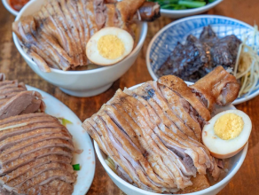
台南美食地圖
來到蔚為全臺歷史最悠久的都市-臺南，必去著名古蹟景點外，別忘了好好品嘗美食之都的特色小吃。
來臺南遊玩，一天沒吃個五餐，可別說你有真正來過這塊寶地！
齒頰留香的好滋味兒，正是波波如此眷戀臺南的原因，僅僅只是住個四年，就足以迷戀一輩子。
趁疫情趨緩之餘，訂張往臺南的車票吧，
「臺南是一個適合人們作夢、幹活、戀愛、結婚、悠然過活的地方！」 —————葉石濤
來臺南遊玩，一天沒吃個五餐，可別說你有真正來過這塊寶地！
齒頰留香的好滋味兒，正是波波如此眷戀臺南的原因，僅僅只是住個四年，就足以迷戀一輩子。
趁疫情趨緩之餘，訂張往臺南的車票吧，
「臺南是一個適合人們作夢、幹活、戀愛、結婚、悠然過活的地方！」 —————葉石濤
小吃
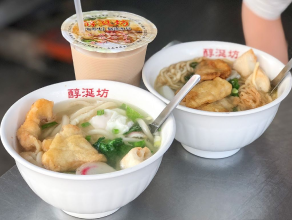
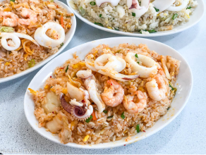
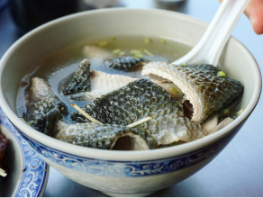
臺南人愛吃甜、用糖做料理調味的說法眾說紛紜，但確定的是，蔗糖曾是臺灣重要的外銷經濟產物之一，而臺南就是種甘蔗、產蔗糖的重鎮，以前在料理中加入糖，可是富庶的象徵。
南部的豔陽天，熱辣辣的致命，這時清爽的水果冰可是避暑的絕佳選擇，產地直送的玉井芒果冰更是波波的最愛！
甜點
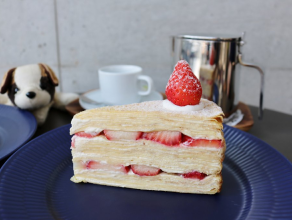
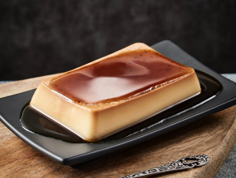
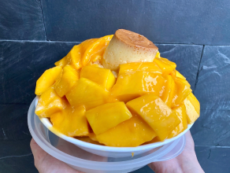
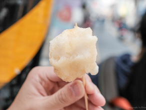
台南越來越好玩！除了有數不盡的小吃、讓人流口水的美食，還有許多打卡景點值得朝聖，近年又有全新的「河樂廣場」於2020年3月7日開幕啟用，還被富比世雜誌盛譽為「世界7大令人期待公園」的景觀空間，儼然成為的人氣打卡勝地！
除了藍天白雲相襯，晚上結合燈光造影，也能觀賞到水面的夢幻倒映，讓河樂廣場越夜越美麗！
餐廳
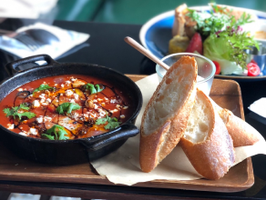
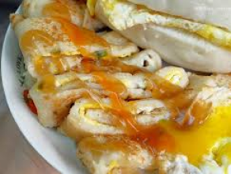
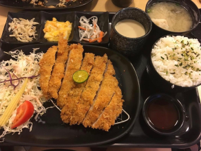
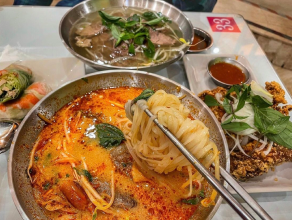
地圖
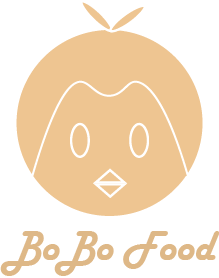